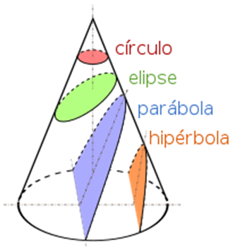

INTRODUCCIÓN
En este capítulo usted aprenderá acerca de las secciones cónicas, en particular las parábolas. Para ello recuerde que, al seccionar un cono con un plano en diferentes direcciones, sus cortes definirán unas figuras denominadas “Cónicas”.

- Plano horizontal: circunferencia
- Plano diagonal con corte de punta: Elipse
- Plano diagonal con corte lateral: parábola
- Plano vertical con corte lateral: hipérbola